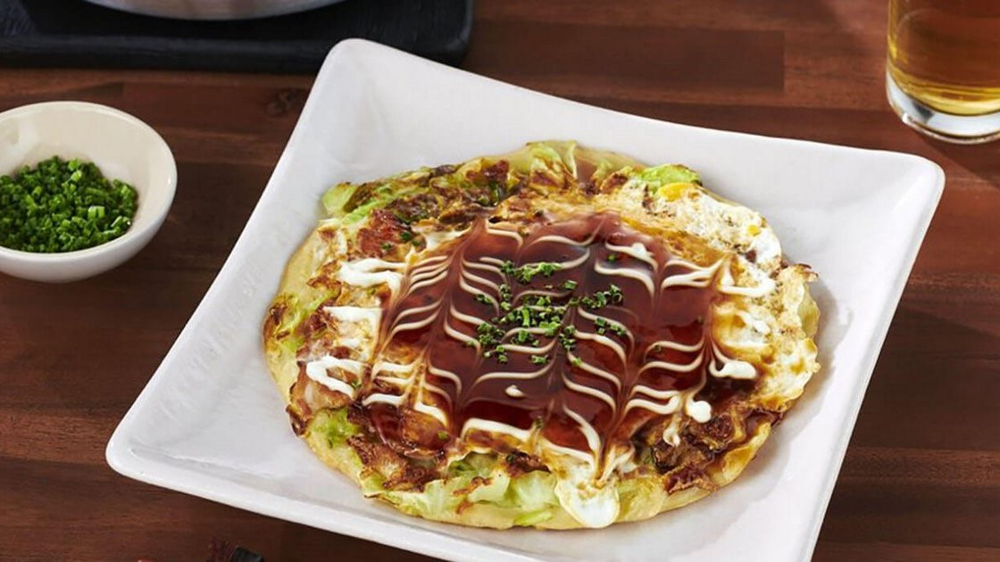

|

Description:
Okonomiyaki is a Japanese savory pancakes packed with protein and vegetables. It is a delicious, healthy, and quick dish. This dish can be found at Jpanese markets or even festivals and it is also popular meal to cook at Japanese homes. This recipe demonstrates how to create the savory Japanese pancake, coming from wandercooks.com
Time needed:
Preparation time - 10 minutes
Cooking time - 15 minutes
Total time - 25 minutes
|
Pancake Base
- Pork or bacon
- Cabbage
- Flour
- Dashi Powder
Toppings
- Okonomiyaki Sauce
- Kewpie Mayonnaise
- Dried Seaweed Flakes
- Dried Bonito Flakes
- Pickled Red Ginger (Optional)
- Japanese 7 Spice (Shichimi Togarashi, Optional)
|
- Fry the bacon / pork until cooked.
- Combine the eggs and dashi powder dissolved in the warm water in a small jug and beat gently.
- In a large bowl add your flour and cornflour / cornstarch, and pour in the egg and dashi stock mixture. Whisk until smooth.
- Next, add your shredded cabbage, half of the green onion slices, cooked bacon / pork and corn into the batter mixture. Mix until all the dry ingredients are evenly coated (but don’t overmix, we want to keep that cabbage nice and fluffy). There shouldn’t be much excess batter liquid at the bottom – if there is, just add a little more chopped cabbage and mix through gently.
- Scoop out the mixture onto a large frying pan over medium heat. We aim for a circle shape around 10 cm / 4 inches wide. Cook each pancake for a few mins per side, until lightly browned on both sides.
- Transfer your pancakes to serving plates, then top with a drizzle of kewpie mayonnaise and okonomiyaki sauce. For even better tasting okonomiyaki, top with sprinkles of aonori, katsuobushi and the remaining green onion. You can also optionally top with the pickled ginger and Japanese 7 spice here.
Servings: 4
|